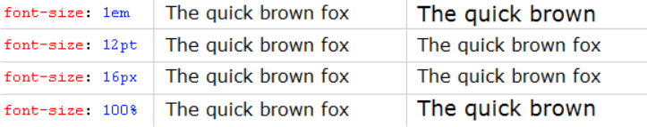
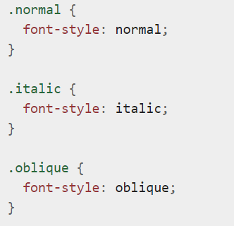

Оформление текста.Часть 2
- Свойство text-align
- При помощи этого свойства можно выравнивать текст по горизонтали.Например left , center right.

- Свойсто vertical-align
- Свойство , которое используется для вертикального выравнивания.top- по верхнему краю , middle - по середине ,
bottom - по нижнему краю

- Свойство line-height
- Задает отступ между строчками текста.Можно использовать в значених как переменные велечины , так и относительные.


- Свойство word-spacing
- Устанавливает расстояние(отступ) между словами.Значения используются абсолютные и относительные.

- Свойство letter-spacing
- Задает отступ между буквами в слове.Можно использовать в значених как переменные велечины , так и относительные.
- Свойство text-decoration
- Задает дополнительное оформление текста.overline-надчеркивание ,underline - подчеркивание , line-through - зачеркивание